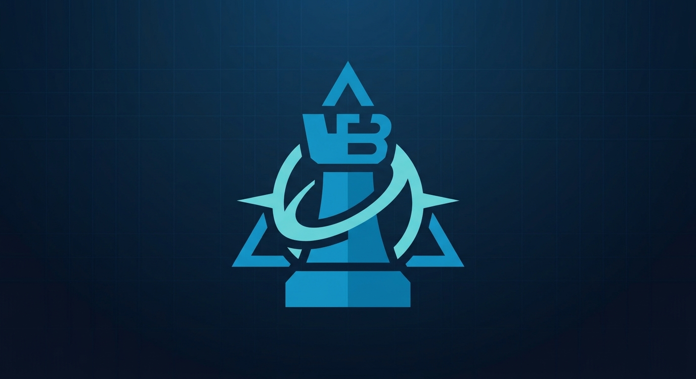
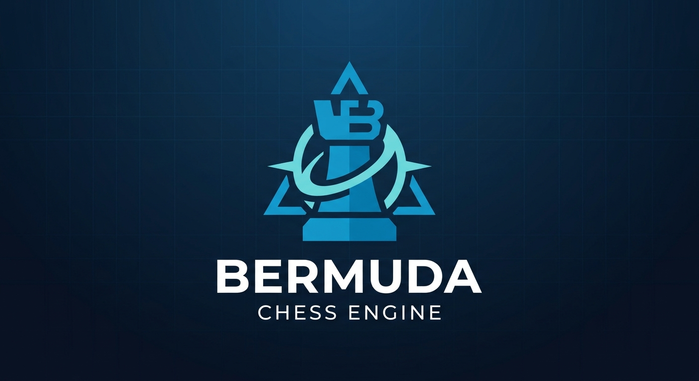

Search
Iterative deepening, PVS, aspiration windows, and selective pruning.

BermudaChess EngineUCI chess engine · C++17
A chess engine built around bitboards, handcrafted evaluation, and a search that keeps getting sharper.

Iterative deepening, PVS, aspiration windows, and selective pruning.
Tapered handcrafted terms for material, activity, threats, and king safety.
Repeatable Cutechess matches and a resumable Texel/SPSA tuner.
01 — First steps
Bermuda is a UCI-compatible engine. Build it with xmake, then connect the executable to a chess GUI such as Cute Chess or Arena.
git clone https://github.com/Stephen-Akpan/Bermuda.git
cd Bermuda
xmake build bermuda
xmake testOn Windows, the release engine is written to build\windows\x64\release\bermuda.exe. Use xmake test to run the project’s configured tests.
02 — Under the hood
The engine combines bitboard move generation with iterative-deepening negamax search. At each iteration it uses principal variation search and aspiration windows, with transposition-table cutoffs and selective pruning to focus work on promising lines.
Transposition-table moves, captures scored with static exchange evaluation, killer moves, and history scores.
Bitboards represent pieces and attacks. Make/unmake operations support search without copying the whole position.
03 — Position scoring
Bermuda scores the position separately for the middlegame and endgame, then blends the two according to remaining material. Scores are returned in centipawns from the side-to-move’s perspective.
EvalParams UCI option.04 — Improve and measure
The standalone Texel tuner can fit evaluation weights from completed games. TriangleTest organizes data preparation, resumable SPSA optimization, and paired Cutechess validation into a file-backed experiment.
.\build\windows\x64\release\bermuda_tuner.exe `
--prepare-pgn games.pgn `
--train-out training.btd `
--validation-out validation.btd `
--format btd --split-seed 42Keep source games, tuning outputs, and final match results separate. Tune on a representative dataset, hold back an untouched set, and compare promising changes in paired games before adopting them.
05 — Connect a GUI
HashTransposition-table memory in megabytes.MoveOverheadClock reserve in milliseconds for communication and scheduling.EvalParamsPath to a text file containing evaluation weights; empty resets built-in defaults.Clear HashClear the transposition table between searches.Set an evaluation file in a GUI or Cutechess with setoption name EvalParams value path-to-params.txt. Invalid parameter files are rejected and reported.
06 — Project information
Bermuda is a personal chess-engine project. Windows is the tested platform; Linux and macOS support remain unverified. Consult the repository for the current license and project status.